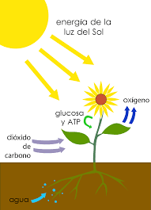

FOTOSINTESIS
¿Qué es fotosíntesis?
La fotosíntesis es el proceso bioquímico mediante el cual las plantas, las algas y las bacterias fotosintéticas
convierten materia inorgánica (dióxido de carbono y agua) en materia orgánica (azúcares), aprovechando la
energía proveniente de la luz solar. Este es el principal mecanismo de nutrición de todos los organismos
autótrofos que poseen clorofila, que es el pigmento esencial para el proceso fotosintético.
La fotosíntesis constituye uno de los mecanismos bioquímicos más importantes del planeta ya que implica la
fabricación de nutrientes orgánicos que almacenan la energía lumínica proveniente del Sol en distintas moléculas
útiles (carbohidratos). De hecho, el nombre de este proceso proviene de las voces griegas foto, “luz”, y
synthesis, “composición”.


a fotosíntesis como proceso químico ocurre en dos etapas diferenciadas: la etapa luminosa (o lumínica) y la
etapa oscura, llamadas así porque solo en la primera interviene directamente la presencia de luz solar (lo
cual no significa que la segunda ocurra necesariamente en la oscuridad).